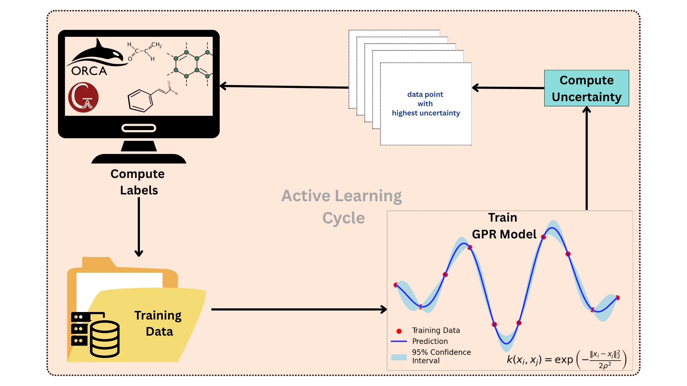
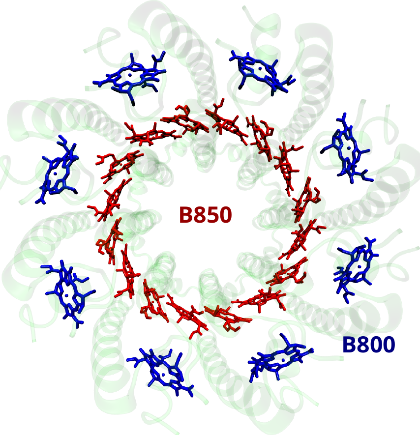
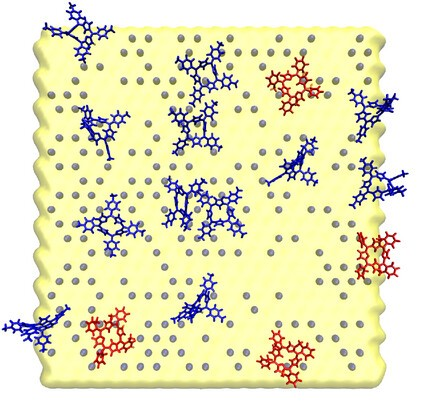
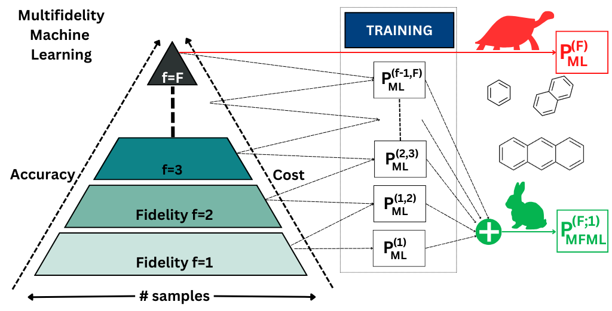
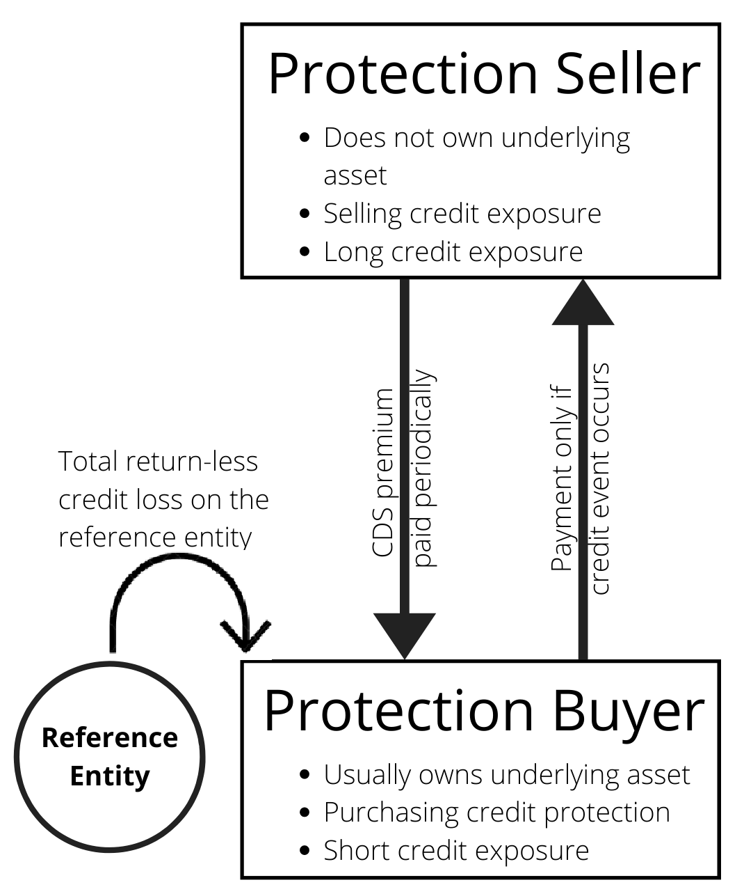

Active Areas of Research
The overarching research focus is the development of novel data-surrogate models for diverse applications. I specifically focus on kernel based methods such as Gaussian Process Regression (GPR), with enhancements to address key challenges in quantum chemistry. In addition, I develop active learning strategies to reduce data redundancy.
For peer-reviewed outputs, see the Publications section.
Machine Learning Method Development
My work concentrates on addressing the bottleneck of expensive high-fidelity computations by building effective fidelity combination techniques. Using kernel based architectures, I formulate workflows that scale efficiently without compromising on accuracy of the surrogates.
Multifidelity Machine Learning (MFML)

Multifidelity methods bridge the gap between inexpensive, low-accuracy approximations and costly, high-accuracy reference computations. This is achieved by comprehensively correcting fidelities in a recursive fashion as: $$P^f(x) = \rho(x)\cdot P^{f-1}(x)+\delta^{f,f-1}(x)~,$$ for an ordered hierarchy of fidelities $f\in\{1,2,\ldots,F\}$.
The surrogate prediction of the MFML model can be seen as a telescopic sum given by: $$P_{\rm MFML}(\boldsymbol{x}) = \sum_{f=1}^F \left[P^{(f,N_f)}(\boldsymbol{x})-P^{(f-1,N_f)}(\boldsymbol{x})\right]~,$$ with $P^{(0,\cdot)}\equiv0$. This formulation can be generalized to the weighted sum: $$P_{\rm MFML}(\boldsymbol{x}) = \sum_{s\in\mathcal{S}}\beta_s P^{(s)}(\boldsymbol{x})~,$$ where the sum is over all selected sub-models for MFML. Notice that the MFML scheme is agnostic to the ML architecture used and can be extended to both kernel based models and nueral networks. My research includes the development of fundamental methods for multifidelity machine learning.
Active Learning & Uncertainty Quantification

Generating training datasets for quantum systems is highly resource-intensive. Active Learning (AL) bypasses this by query-sampling only the most informative configurations from an unlabeled pool. The query selection relies on quantiofying the uncertainty of the model to select the best samples: $$\boldsymbol{x}_{\rm optimal} = \argmax_{\boldsymbol{x}\in\mathcal{U}}\phi(\boldsymbol{x})~.$$ Conventional methods carry out active learning sampling by identifying the variance of the model, such as with the native GPR variance: $$\phi_{\rm GPR}(\mathbf{x}^*) = K(\mathbf{x}^*, \mathbf{x}^*) - \mathbf{k}_*^T (\mathbf{K} + \sigma_n^2 \mathbf{I})^{-1} \mathbf{k}_*~.$$ However, it is a common observation that such methods fail in most real-world applications such as quantum chemistry. To address this I introduced the novel low-fidelity as bias (LFaB) method which utilizes the information of the property at a cheap-to-compute whhich provides a proxy for the bias of the model computed as $$\phi_{\rm LFaB}(\boldsymbol{x}^*) = \left\lvert g_{ML}^{\rm low}(\boldsymbol{x}^*)-g^{\rm low}(\boldsymbol{x}^*)\right\rvert~.$$ Ongoing research in active learning schemes helps to further reduce computational redundancy in the ML pipeline resulting in a lean-clean and robust ML model.
Domain Applications
Quantum Chemistry with Machine Learning

The cost of high-fidelity quantum chemical computations for molecular properties, and electronic properties such as excitation energies and transition dipole moments are limited by the unfavorable scaling with system size. To avoid the expensive calculations, I develop ML methods that map the nuclear coordinates $\boldsymbol{R}$ to the properties using surrogate models. With a preliminary focus on kernel based architectures, I have successfully applied the above developed methods to reduce computational costs by over $\sim850\times$ in simulating artificial light harvesting in porphyrins on a clay surface. My recent work attempts to further streamline the data-cost aware ML workflow for quantum chemistry and simulating large-scale systems such as entire light harvesting complexes in photosynthetic bacteria.



Stochastic Modeling in Economics & Finance

Pricing of default swaps is a key process for modelling credit risks. This is of particular interest to financial instruments such as catastrophe swaps which allow insurance companies to hedge against insurance payouts for natural disaster destruction. In previous work, using Martingale process analysis of credit risk, I provided a comprehensive closed form solution of the floating and fixed legs of the catastrophe swap as $$PV^{\rm CDS}_{\rm float} = \mathbb{E}^{\mathbb{Q}}_{0}\left[e^{-r\tau^{CDS}}(1-\delta)N\textbf{1}_{\tau^{CDS}\leq t_i}\right]$$ and $$PV^{\rm CDS}_{\rm fixed} = \sum_{i=1}^n e^{-rt_i}E^{\mathbb{Q}}_0\left[s_{CDS}N\Delta t_i\textbf{1}_{\tau^{CDS}>t_i}\right] \\ + \mathbb{E}^{\mathbb{Q}}_0\left[e^{-r\tau^{CDS}}s_{CDS}N\left(\tau^{CDS}-t_{i-1}\right)\textbf{1}_{t_{i-1}\leq\tau^{CDS}\leq t_i}\right]~.$$ The use of a deep UNET architecture to estimate the recovery rate and estiamted losses for hurricanes is also presented.